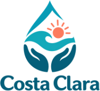

01 / OUR MISSION
Our mission
We empower coastal communities to secure safe water and sanitation and to lead their own future, building the local skills, jobs and resilience that let every village flourish for generations.

Bringing safe drinking water and sanitation to coastal villages in Ecuador while creating local jobs in maintenance and repair.
Costa Clara focuses on drinking water, sanitation, and the technical training that enables coastal communities to maintain reliable systems themselves.
Work toward reliable access to clean, safe water for coastal households.
Support practical training, maintenance, and repair opportunities within villages.
Promote dependable sanitation infrastructure and healthier daily life.
Help build stronger water systems and local capacity.
Our work connects essential services with local opportunity, so coastal villages can build and sustain their own future.
We empower coastal communities to secure safe water and sanitation and to lead their own future, building the local skills, jobs and resilience that let every village flourish for generations.
Thriving coastal communities where safe water flows freely, powered by their own people.
Solutions are shaped with the people who use and maintain them.
Build water and sanitation systems that communities can sustain.
Communicate clearly about commitments, progress and challenges.
Invest in skills, maintenance and repair jobs for the long term.
Explore example locations along coastal Ecuador and the types of water, sanitation, and local training initiatives Costa Clara could support. These are illustrative ideas, not completed projects.
The map uses OpenStreetMap tiles through Leaflet. Open this website with an internet connection to explore the pins.
Support the vision of safe drinking water, better sanitation, and locally led maintenance and repair. This is a demo form — no money will be collected.
Long-term access depends on community skills, reliable maintenance, and local ownership.
Demo only: use fake details; do not enter personal information. For email, use a fictional but valid-format address, e.g. demo@example.com.
Your simulated $25 one-time contribution shows support for safe water, sanitation, and local jobs in coastal Ecuador.
This was a demo. No charge was made and your information was not stored.